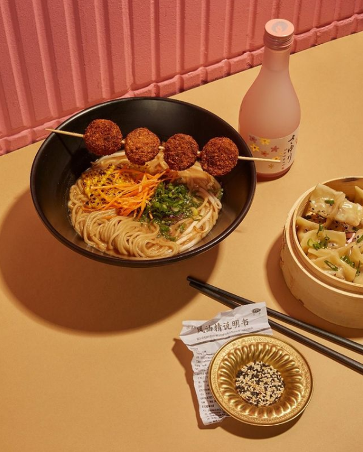
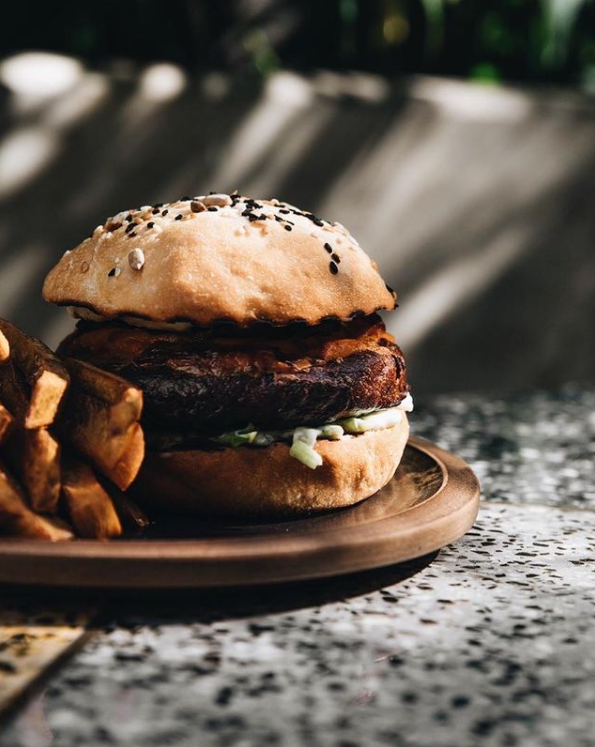
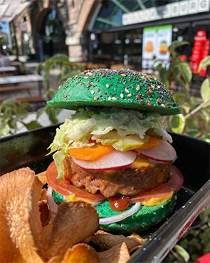

Bioma Café
Tienen mesitas adentro, en la vereda y también take away. La atención es muy copada. Probé el matcha latte, croissant con chocolate y el bagel con jamón y queso. Éste último dos veces porque es demasiado rico. Tienen varias opciones de leches vegetales, y la pastelería es increíble.
Koi Dumplings
Esta marca no es vegana pero tiene opciones plant based: se puede pedir cualquier ramen con caldo vegetal y cambiando la proteína por falafel o tofu. Probé la Degustación vegana (4 dumplings de hongos y 4 de vegetales) y el ramen Shoyu Ajo, cambiando la carne y el huevo por tofu rebozado. Los dumplings son muy ricos pero el ramen me voló la cabeza. Nunca pensé que una sopa pudiera tener tantos sabores distintos y que queden tan bien.
Sacro
Lleno de plantas por todos lados. Se puede consumir adentro, en el patio (con calefacción), o en la vereda donde tienen mesas y parking para bicis. Probé la hamburguesa Sacro y el Key lime pie, también un café con leche de almendras, y kefir. Todo equilibradamente rico. Lxs camarerxs súper atentxs y buena onda. Todo el ambiente es muy lindo.
Williamsburg
Sinceramente, la Beyond meat me voló la cabeza. Es increíble lo parecida a una hamburguesa no plant based. Trae pan verde, que tiene una textura tan suave que parece una nube, también varios vegetales que dan una textura muy copada, y queso (hecho a base de plantas, obviamente). El medallón es una locura, sin exagerar. Aunque, si no te gustan las hamburguesas tan cargadas, cuentan con una opción cheese burger, que solo es una hamburguesa con queso. En cuanto a precios: es un poco elevado. Viene con papas y la bebida se cobra aparte. Pero realmente vale la pena. También tienen una salsa picante, la Pica Pica, riquísima. Más si la mezclas con ketchup 😉.